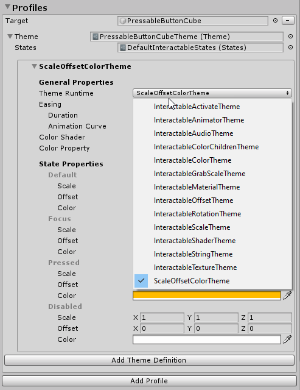

Button (ボタン)

Button (ボタン) を使うと、ユーザは即座にアクションを引き起こすことができます。Mixed Reality の最も基本的なコンポーネントの１つです。MRTK は、様々なタイプのボタン プレハブを提供しています。
MRTK のボタン プレハブ
MRTK/SDK/Features/UX/Interactable/Prefabs フォルダ下のボタン プレハブのサンプル
Unity UI の 画像/グラフィック ベースのボタン
UnityUIInteractableButton.prefabPressableButtonUnityUI.prefabPressableButtonUnityUICircular.prefabPressableButtonHoloLens2UnityUI.prefab
Collider（コライダー） ベースのボタン
 PressableButtonHoloLens2 PressableButtonHoloLens2 |
 PressableButtonHoloLens2Unplated PressableButtonHoloLens2Unplated |
 PressableButtonHoloLens2Circular PressableButtonHoloLens2Circular |
|---|---|---|
| HoloLens 2 のバック プレート付きのシェル スタイル ボタンは、Border light (ボーダー ライト)、Proximity light (近接ライト)、Compressed front plate (扁平なフロント プレート) などの様々な視覚フィードバックをサポートします。 | バックプレートのない HoloLens 2 のシェル スタイル ボタン | HoloLens 2 の円形シェル スタイル ボタン |
 PressableButtonHoloLens2_32x96 PressableButtonHoloLens2_32x96 |
 PressableButtonHoloLens2Bar3H PressableButtonHoloLens2Bar3H |
 PressableButtonHoloLens2Bar3V PressableButtonHoloLens2Bar3V |
| ワイドな HoloLens 2 のシェル スタイル ボタン 32x96mm | バック プレートを共有する水平な HoloLens 2 ボタン バー | バック プレートを共有する垂直な HoloLens 2 ボタン バー |
| PressableButtonHoloLens2ToggleCheckBox_32x32 | PressableButtonHoloLens2ToggleSwitch_32x32 | PressableButtonHoloLens2ToggleRadio_32x32 |
| HoloLens 2's shell-style checkbox 32x32mm | HoloLens 2's shell-style switch 32x32mm | HoloLens 2's shell-style radio 32x32mm |
| PressableButtonHoloLens2ToggleCheckBox_32x96 | PressableButtonHoloLens2ToggleSwitch_32x96 | PressableButtonHoloLens2ToggleRadio_32x96 |
| HoloLens 2 のシェルスタイル チェックボックス 32x96mm | HoloLens 2 のシェルスタイル スイッチ 32x96mm | HoloLens 2 のシェルスタイル ラジオボタン 32x96mm |
 Radial Radial |
 Checkbox Checkbox |
 ToggleSwitch ToggleSwitch |
| Radial button | Checkbox | Toggle switch |
 ButtonHoloLens1 ButtonHoloLens1 |
 PressableRoundButton PressableRoundButton |
 Button Button |
| HoloLens 1 のシェル スタイル ボタン | 丸型押しボタン | ベーシックなボタン |
Button (Assets/MRTK/SDK/Features/UX/Interactable/Prefabs/Button.prefab) は、 Interactable のコンセプトに基づいており、ボタンまたはその他のタイプのインタラクション可能な面に簡単な UI コントロールを提供します。 ベースライン ボタンは、近くのインタラクション要素に対して Articulated hand (多関節ハンド) で入力する場合や、遠くのインタラクション要素に対してゲイズ＋エアタップなど、利用可能な全ての入力方法をサポートします。音声コマンドを使用してボタンをトリガーすることもできます。
PressableButtonHoloLens2 (Assets/MRTK/SDK/Features/UX/Interactable/Prefabs/PressableButtonHoloLens2.prefab) は、HoloLens 2 のシェル スタイル ボタンで、ダイレクト ハンド トラッキングの入力用に精密な動きをサポートします。 Interactable のスクリプトと PressableButton のスクリプトを組合わせています。
HoloLens 2 では、不透明な背面をもつボタンを使うことが推奨されます。透明なボタンは、これらのユーザビリティと安定性の問題のため推奨されません。
- アイコンとテキストが物理環境と合わさると読みづらい
- いつイベントがトリガーされるか理解しづらい
- 透明な平面を通して表示されたホログラムは HoloLens 2 の Depth LSR 安定化で不安定になりうる
Pressable button (押しボタン) の使い方
Unity UI ベースのボタン
シーン上に Canvas を作成します (GameObject -> UI -> Canvas)。Canvas のインスペクター パネルにて以下を行います。
- "Convert to MRTK Canvas" をクリック
- "Add NearInteractionTouchableUnityUI" をクリック
- Rect Transform コンポーネントの X, Y, Z のスケールを 0.001 に設定
その後、PressableButtonUnityUI (Assets/MRTK/SDK/Features/UX/Interactable/Prefabs/PressableButtonUnityUI.prefab)、PressableButtonUnityUICircular (Assets/MRTK/SDK/Features/UX/Interactable/Prefabs/PressableButtonUnityUICircular.prefab)、または PressableButtonHoloLens2UnityUI (Assets/MRTK/SDK/Features/UX/Interactable/Prefabs/PressableButtonHoloLens2UnityUI.prefab) を Canvas にドラッグしてください。
コライダー ベースのボタン
単に PressableButtonHoloLens2 (Assets/MRTK/SDK/Features/UX/Interactable/Prefabs/PressableButtonHoloLens2.prefab) またはPressableButtonHoloLens2Unplated (Assets/MRTK/SDK/Features/UX/Interactable/Prefabs/PressableButtonHoloLens2Unplated.prefab) をドラッグしてシーンに置くだけです。これらのボタン プレハブは、Articulated hand (多関節ハンド) 入力やゲイズなど、様々なタイプの入力に対して視聴覚フィードバックするように既に設定されています。
プレハブ自体と Interactable コンポーネントで公開されているイベントを使用して、追加のアクションをトリガーできます。 HandInteractionExample のシーンの pressable buttons は、Interactable の OnClick イベントを使って、キューブの色の変更をトリガーします。このイベントは、ゲイズ、エアタップ、ハンド レイ などの様々なタイプの入力メソッド、及び pressable button のスクリプトを介した物理的なボタンの押下に対してトリガーされます。

ボタンの PhysicalPressEventRouter を介して、Pressable button が OnClick イベントを発生させるタイミングを設定できます。例えば、Interactable On Click を Event On Press に設定することにより、OnClick をボタンを押して離した時ではなく、最初に押した時にトリガーするよう設定できます。

多関節ハンドの入力状態情報を活用するには、pressable button イベントの - Touch Begin, Touch End, Button Pressed, Button Released を使用できます。ただし、これらのイベントは、エアタップ、ハンド レイ、ゲイズ 入力には応答して発生はしません。Near と Far のインタラクション両方をサポートするには、Interactable の OnClick イベントを使うことが推奨されます。

インタラクションの状態
アイドル状態では、ボタンの前面プレートは見えません。指が近づいたり、視線入力のカーソルが表面をターゲットすると、前面のプレートの光る境界線が現れます。前面プレートの表面には、指先の位置がさらにハイライトされます。指で押すと、前面プレートが指先で動きます。指先が前面プレートの表面に触れると、わずかにパルスのエフェクトが現れ、タッチ ポイントの視覚的なフィードバックが得られます。
HoloLens 2 のシェルスタイルのボタンには、ユーザーのインタラクションへの確信を増やすため、多くの視覚的な手がかりとアフォーダンスがあります。
| 近接光 | フォーカスのハイライト | 圧縮された骨組み | トリガー時の波動 |
このわずかなパルス エフェクトは、現在インタラクションしているポインター上に存在する ProximityLight(s) を探す、pressable button によってトリガーされます。近接ライトが見つかった場合、 ProximityLight.Pulse メソッドが呼び出され、シェーダー パラメーターを自動的にアニメーション化してパルスを表示します。
[Inspector] (インスペクター) プロパティ

Box Collider (ボックスコライダー)
ボタンの前面プレートのための Box Collider。
Pressable Button (押しボタン) ハンド プレス インタラクションでのボタン移動のロジック。
Physical Press Event Router (物理的なプレス イベントのルーター) ハンド プレス インタラクションから Interactable へイベントを送るスクリプト。
Interactable Interactable は様々なタイプのインタラクションの状態とイベントを処理します。HoloLens のゲイズ、ジェスチャ、及び音声入力と、没入型ヘッドセットのモーションコントローラーの入力は、このスクリプトによって直接処理されます。
オーディオ ソース 音声フィードバック クリップ用の Unity のオーディオ ソース。
NearInteractionTouchable.cs 多関節ハンドでオブジェクトをタッチ可能にするために必要です。
プレハブのレイアウト
ButtonContent オブジェクトには、フロント プレート、テキスト ラベル、およびアイコンが含まれています。 FrontPlateは、Button_Box シェーダーを使用して、人差し指の近接に応答します。 光る境界線、近接ライト、およびタッチのパルス エフェクトを示します。 テキスト ラベルは TextMesh Pro で作成されます。 SeeItSayItLabel の可視性は、Interactable のテーマによって制御されます。

アイコンとテキストの変更方法
MRTK のボタンは、ボタンのアイコン、テキスト、ラベルの変更を手助けするための ButtonConfigHelper コンポーネントを使用しています。（もし、選択したボタンに要素が存在しない場合はいくつかのフィールドは存在しないかもしれないことにご注意ください。）
アイコン セットの作成と変更
Icon Set は ButtonConfigHelper コンポーネントで使われる共有のアイコン アセットのセットです。3 種類のアイコン スタイル がサポートされています。
- Quad アイコンは
MeshRendererを使って quad に描画されます。これはデフォルトのアイコン スタイルです。 - Sprite アイコンは
SpriteRendererを使って描画されます。これは、アイコンをスプライト シートでインポートするのが好みの場合や、アイコン アセットを Unity UI コンポーネントと共有したい場合に有用です。このスタイルを使うには、Sprite Editor パッケージ (Windows -> Package Manager -> 2D Sprite) をインストールする必要があります。 - Char アイコンは
TextMeshProコンポーネントを使って描画されます。これはアイコン フォントを使うのが好みの場合に有用です。HoloLens アイコン フォントを使うには、TextMeshProフォント アセットを作る必要があります。
ボタンが使っているスタイルを変更するには、ButtonConfigHelper の Icons ドロップダウンを展開し、Icon Style ドロップダウンから選択します。
アセット メニュー Create > Mixed Reality Toolkit > Icon Set にて新しいボタンのアイコン セットを作ることができます。Quad や Sprite アイコンを追加するには、それぞれの列にドラッグするだけです。Char アイコンを追加するには、まずフォント アセットを作成し、それを割り当てます。
MRTK 2.4 以上では、カスタムのアイコン テクスチャは IconSet に移動することを推奨します。 プロジェクト内のすべてのボタンのアセットを新しい推奨のフォーマットにアップグレードするには、ButtonConfigHelperMigrationHandler をお使いください。 (Mixed Reality Toolkit -> Utilities -> Migration Window -> Migration Handler Selection -> Microsoft.MixedReality.Toolkit.Utilities.ButtonConfigHelperMigrationHandler)
ボタンのアップグレードには、Microsoft.MixedRealityToolkit.Unity.Tools パッケージのインポートが必要です。

移行中にデフォルトのアイコン セットにアイコンが見つからなかった場合は、MixedRealityToolkit.Generated/CustomIconSets にカスタムのアイコン セットが作成されます。これが行われたことはダイアログで表示されます。

HoloLens の Icon Font Asset を作成する
まず、アイコン フォントを Unity にインポートします。Windows マシンでは、デフォルトの HoloLens フォントは Windows/Fonts/holomdl2.ttf にあります。このファイルを Assets フォルダーにコピー ペーストしてください。
次に、Window > TextMeshPro > Font Asset Creator で TextMeshPro Font Asset Creator を開きます。HoloLens の font atlas 生成での推奨設定は以下の通りです。すべてのアイコンを含めるには、Character Sequence フィールドに次の Unicode レンジをペーストしてください。
E700-E702,E706,E70D-E70E,E710-E714,E718,E71A,E71D-E71E,E720,E722,E728,E72A-E72E,E736,E738,E73F,E74A-E74B,E74D,E74F-E752,E760-E761,E765,E767-E769,E76B-E76C,E770,E772,E774,E777,E779-E77B,E782-E783,E785-E786,E799,E7A9-E7AB,E7AF-E7B1,E7B4,E7C8,E7E8-E7E9,E7FC,E80F,E821,E83F,E850-E859,E872-E874,E894-E895,E8A7,E8B2,E8B7,E8B9,E8D5,E8EC,E8FB,E909,E91B,E92C,E942,E95B,E992-E995,E9E9-E9EA,EA37,EA40,EA4A,EA55,EA96,EB51-EB52,EB65,EB9D-EBB5,EBCB-EBCC,EBCF-EBD3,EC03,EC19,EC3F,EC7A,EC8E-EC98,ECA2,ECD8-ECDA,ECE0,ECE7-ECEB,ED17,EE93,EFA9,F114-F120,F132,F181,F183-F186
フォント アセットが生成されたら、プロジェクトに保存し Icon Set の Char Icon Font フィールドに割り当てます。Available Icons ドロップダウンが生成されます。アイコンをボタンで使えるようにするには、クリックしてください。Selected Icons ドロップダウンに追加され、ButtonConfigHelper に表示されるようになります。オプションでアイコンにタグをつけることができます。これにより、アイコンを実行時に設定することができます。
public void SetButtonToAdjust()
{
ButtonConfigHelper buttonConfigHelper = gameObject.GetComponent<ButtonConfigHelper>();
buttonConfigHelper.SetCharIconByName("AppBarAdjust");
}
Icon Set を使うには、ボタンを選択し、ButtonConfigHelper の Icons ドロップダウンを展開し、Icon Set フィールドに割り当ててください。
ボタンのサイズの変更方法
HoloLens 2 のシェルスタイル ボタンのサイズは 32x32mm です。このサイズをカスタマイズするには、ボタン プレハブのこれらのオブジェクトのサイズを変更してください。
- FrontPlate
- BackPlate 配下の Quad
- ルートの Box Collider
そして、ボタンのルートにある NearInteractionTouchable スクリプトの Fix Bounds ボタンをクリックしてください。
FrontPlate のサイズを更新
Quad のサイズを更新
Box Collider のサイズを更新
'Fix Bounds' をクリック
音声コマンド ('See-it, Say-it')
Speech Input Handler (音声入力ハンドラー)
Pressable Buttonの Interactable スクリプトは、すでに IMixedRealitySpeechHandlerを実装しています。 ここで音声コマンドのキーワードを設定できます。

Speech Input Profile (音声入力プロファイル) さらに、グローバルな Speech Commands Profile に音声コマンド キーワードを登録する必要があります。

See-it, Say-it ラベル Pressable Button プレハブには、SeeItSayItLabel オブジェクトの下にプレースホルダー TextMesh Pro ラベルがあります。このラベルを使用して、ボタンの音声コマンド キーワードをユーザーに伝えることができます。

ボタンをゼロから作成する方法
これらのボタンの例は、PressableButtonExample のシーンにあります。

1. キューブで Pressable Button を作成する (ニア インタラクションのみ)
- Unity のキューブを作成します (GameObject > 3D Object > Cube)
PressableButton.csのスクリプトを追加しますNearInteractionTouchable.csのスクリプトを追加します
PressableButton の [Inspector] (インスペクター) パネルで、キューブ オブジェクトを Moving Button Visuals に割り当てます。

キューブを選択すると、オブジェクト上に複数の色付きのレイヤーが表示されます。 これにより、Press Settings 以下で設定されている距離の値が可視化されます。ハンドルを使用して、プレスを開始する (オブジェクトが動く) タイミングとイベントをトリガーするタイミングを設定できます。


ボタンを押すと、ボタンが移動し、TouchBegin()、TouchEnd()、ButtonPressed()、ButtonReleased() などの PressableButton.cs のスクリプトで公開されている適切なイベントが生成されます。

2. 視覚的なフィードバックをベーシックなキューブ ボタンに加える
MRTK Standard Shader は、視覚的なフィードバックを簡単に追加できるさまざまな機能を提供しています。 マテリアルを作成し、シェーダー Mixed Reality Toolkit/Standard を選択します。 または、MRTK 標準シェーダーを使用している /SDK/StandardAssets/Materials/ にある既存のマテリアルの１つを使用または複製できます。

Fluent Options の下の Hover Light と Proximity Light をチェックします。 これにより、近くの手 (近接ライト) と遠くのポインター (ホバーライト) の両方のインタラクションの視覚的なフィードバックが可能になります。


3. オーディオ フィードバックをベーシックなキューブ ボタンに加える
PressableButton.cs のスクリプトは TouchBegin()、TouchEnd()、ButtonPressed()、ButtonReleased() などのイベントを公開するため、音声フィードバックを簡単に割り当てることができます。Unity の Audio Source をキューブ オブジェクトに追加し、AudioSource.PlayOneShot() を選択してオーディオ クリップを割り当てます。/SDK/StandardAssets/Audio/ フォルダーの下の MRTK_Select_Main および MRTK_Select_Secondary オーディオ クリップを使用できます。


4. 視覚的な状態とファー インタラクションイベントの処理を加える
Interactable は、さまざまなタイプの入力インタラクションの視覚的な状態を簡単に作成できるスクリプトです。 また、ファー インタラクション イベントも処理します。Interactable.cs を追加し、キューブ オブジェクトを Profiles の下の Target フィールドにドラッグ アンド ドロップします。 次に、ScaleOffsetColorTheme タイプの新しいテーマを作成します。このテーマでは、Focus や Pressed などの特定のインタラクションの状態におけるオブジェクトの色を指定できます。スケールとオフセットも制御できます。Easing をチェックし、継続時間を設定して視覚的な変化をスムーズにします。

オブジェクトが遠く (ハンド レイ、またはゲイズ カーソル) と近く (ハンド) の両方のインタラクションに応答するのがわかります。


カスタム ボタンのサンプル
HandInteractionExample のシーン で、ピアノと丸ボタンの例を見てください。どちらも PressableButton を使用しています。


各ピアノのキーには、PressableButton と NearInteractionTouchable のスクリプトが割り当てられています。NearInteractionTouchable の Local Forward の方向が正しいことを確認することが重要です。エディターでは白い矢印で表されます。矢印がボタンの前面からその先を指していることを確認してください。